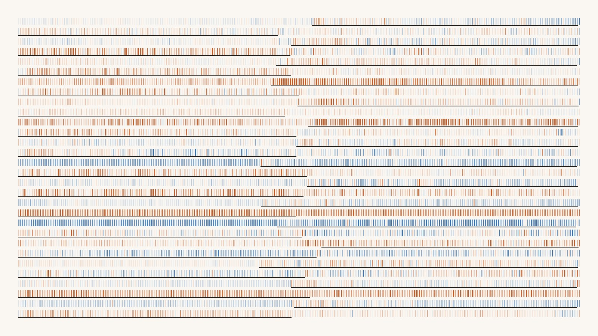
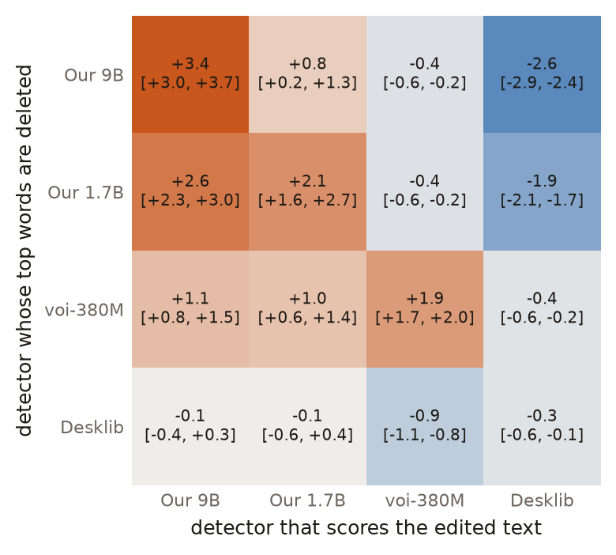
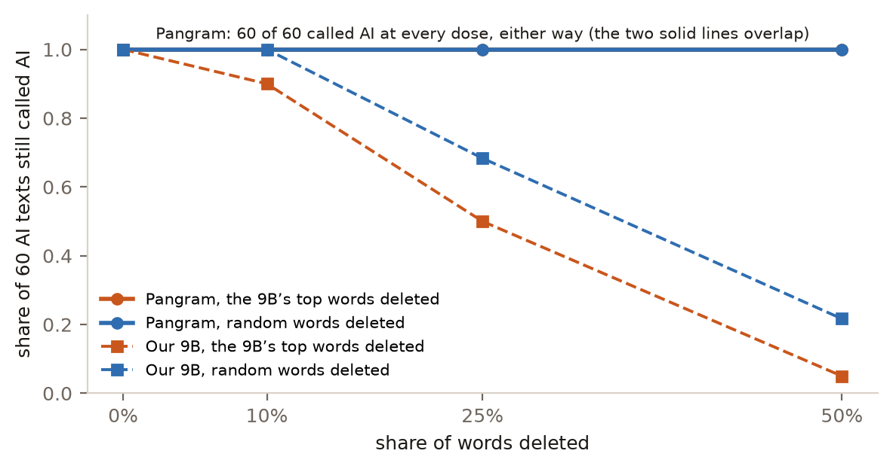
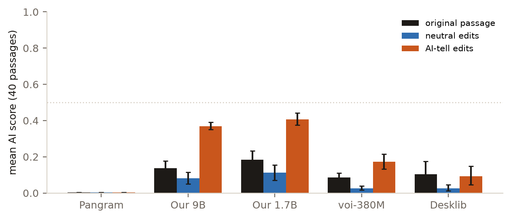
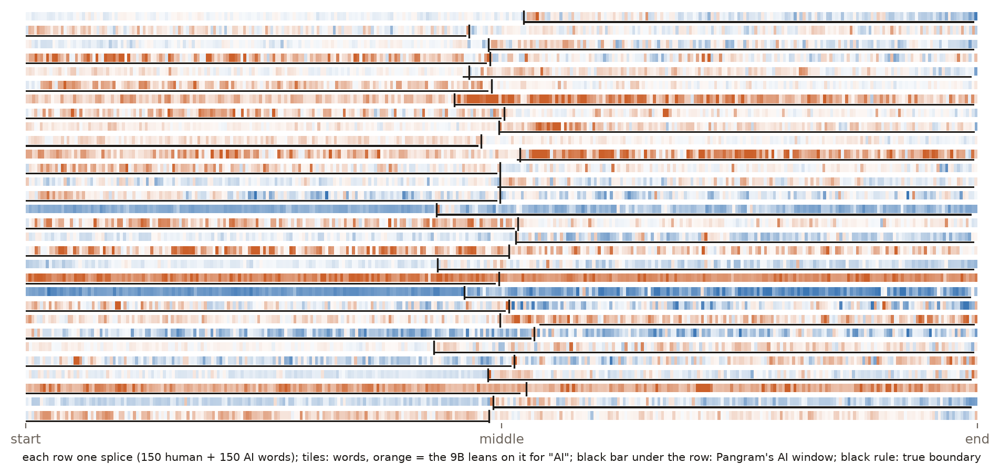
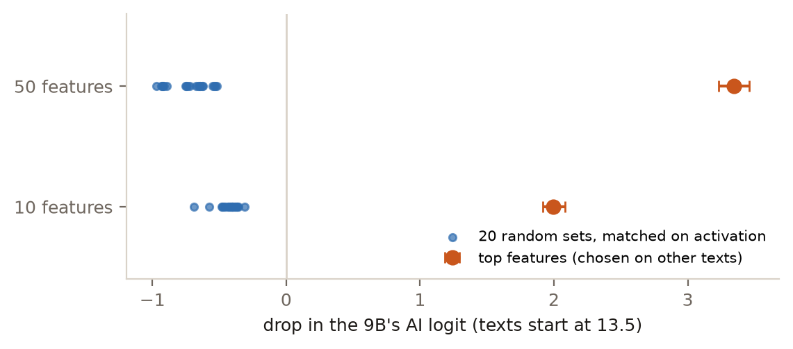
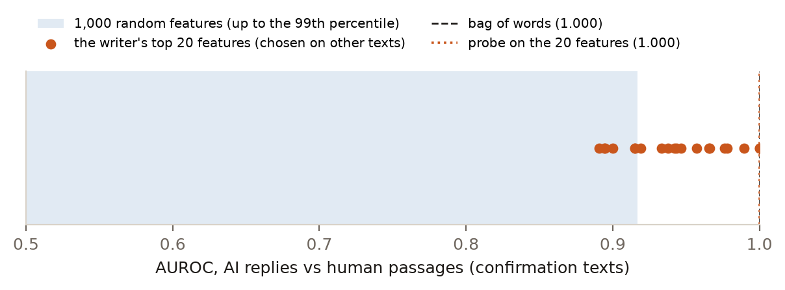

← Research·Experiments·
The words open AI detectors rely on never changed Pangram’s verdict
We asked which words make an AI-text detector say “AI”. Four open detectors each lean on their own, mostly ordinary words, and deleting them works on the detector that chose them. Pangram, a closed commercial detector, did not move: 60 of 60 AI texts stayed “AI” with up to half their words deleted, and 40 of 40 human passages stayed “human” with stock AI phrases added.

results/attr/splices.json and results/pangram.json. Each tile is a word: orange where deleting it lowers our 9B detector’s AI score, blue where it raises it. The dark bar marks the windows Pangram labelled AI. Figure 6 is the labelled version.Summary: the short answer and the key results
In short
Can interpretability show which words make Pangram say “AI”?
Not directly, and the words open detectors rely on do not move it. Pangram has no public weights, so we read four open detectors from the inside and tested what they rely on by editing text. Each open detector leans on its own, mostly ordinary words (“doesn’t”, “started”, “kind”), not stock phrases; the em dash ranked in the bottom quarter for all four. Deleting the 9B detector’s top quarter of words lowered its score 0.29 [0.25, 0.33] more than deleting a random quarter. Pangram called all 60 AI texts it saw AI after every deletion we tried, the 9B’s top words or random ones, up to half the words, and called all 40 human passages human after about 10 stock AI edits each, edits that raised our 9B’s score by 0.29. Pangram did find the AI half of 30 spliced texts, so it can change its mind: it reacts to how whole stretches were written, not to keywords.
Key results
| What we tested | Result | Compared with |
|---|---|---|
| Pangram on 60 AI texts with the 9B’s top 10%, 25% or 50% of words deleted, or its top 25% of sentences | 60 of 60 still “AI” in every arm; fraction AI 1.000 | The same number of random words or sentences deleted: also 60 of 60. Our 9B on the same texts: 30 of 60 still flagged at 25%, 3 of 60 at 50% |
| Pangram on 40 human passages with about 10 stock AI edits each (“Moreover,”, em dashes, “a testament to”) | 40 of 40 still “human”; confidence change +0.8 [−0.8, +2.5] (log-odds) | Neutral edits at the same places: 40 of 40. Our 9B’s score rose by 0.29 [0.26, 0.32] |
| Each open detector deletes its own top 25% of words (265 AI texts) | Score falls more than with random words: 9B +0.29 [0.25, 0.33], 1.7B +0.11, voi +0.26; Desklib −0.06 (worse than random) | 20 random deletions of the same size per text |
| One detector’s top words used on another | The 9B’s list beats random on the 1.7B (+0.8 log-odds [0.2, 1.3]) and does worse than random on voi (−0.4) and Desklib (−2.6 [−2.9, −2.4]) | Random deletions scored by the same detector |
| Which words? Agreement between detectors | Rank correlation of word attributions 0.12 to 0.32 between the 9B and the others; 2 to 6 shared words in each pair’s top 30; stock AI words and the em dash rank low for all four | A bag of words fitted to Pangram’s labels: top AI tokens “just”, the curly apostrophe, contractions |
| Can Pangram move at all? 30 splices of 150 human + 150 AI words | 30 of 30 “Mixed”, with the AI window on the AI half every time (99.5% of words placed right); each open detector puts 72-75% of its “AI” attribution inside Pangram’s AI windows | 51% of words sit in those windows |
| Inside the 9B: Qwen-Scope SAE features (layer 16) | Removing the top 10 features lowers its AI log-odds by 2.0 [1.9, 2.1]; they fire on sentence ends and paragraph openers (“However,”, “Another”, “One of the”). No text unflagged (they start at 13.5) | 20 random feature sets of matched size: +0.3 to +0.7 (the score rises) |
| Inside the writer: Qwen3-8B’s own SAE (layer 18) | Its top features separate its replies from human passages (AUROC 1.000), but fire on topic words (“homework”, “bike”, “remote”) and do not line up word by word with the 9B (Spearman −0.04) | A bag of words also scores 1.000; random features up to 0.917 (99th percentile) |
| Predictions | 5 hit, 3 missed (Section 07) | Eight, written before the runs that score them |
01Introduction
Take a 180-word opinion piece about small family-run restaurants, written by Qwen3-8B with a plain-style prompt and a de-slopping sampler. Our own AI detector, a 9-billion-parameter model, scores it 0.99999. Delete the quarter of its words that detector leans on most (“family”, “restaurants”, “heart”, “communities”, “offer”, “tradition” and so on) and its score falls to 0.01: human. Send that stub to Pangram, a commercial detector, and it says AI, as sure as before. Delete half the words, and Pangram still says AI. Whatever Pangram reads, it is not the words our detector reads.
What is known. AI-text detectors are fine-tuned language models, and people want to know why they flag a text. GPTZero shows the sentences that most raise its score, found by deleting each and rescoring (its technical report calls this saliency plus occlusion), and publishes a list of “AI vocabulary” and ten AI writing patterns taken from Wikipedia’s signs of AI writing. A study of that vocabulary found classifiers built on it alone near chance (BEA 2025). Our de-slop benchmark found Pangram flagged every reply from every de-slopping method, including ones with almost none of the stock phrases left.
What is missing. No one has tested whether the words an open detector relies on are the words a closed one relies on. Pangram publishes no weights, so integrated gradients, probes and sparse autoencoders cannot run on it. What can run on it is an edit: change the text, ask again.
Which words and internal features make open AI detectors say “AI”, and does removing or adding them change what Pangram says?
What this note does. It reads four open detectors from the inside, tests each reading by deletion against random deletions of the same size, then sends the same edited texts to Pangram. It also reads the model that wrote the AI text with its own sparse autoencoder. Its contributions:
- Word-level attributions for four open detectors on the same 847 texts, with a causal deletion test and a cross-detector transfer test (Sections 4.1 and 4.2).
- A black-box test of Pangram with the same edits: guided and random deletions up to half the words, stock-phrase insertions into human text, and spliced texts as a positive control (Sections 4.3 to 4.5).
- Sparse-autoencoder features inside the 9B detector, tested by ablation against matched random features (Section 4.6).
- What the writer model does inside against what the detectors react to (Section 4.7).
- A negative methods result: integrated gradients disagreed with deletion on every detector (Section 4.8).
Success, fixed in a plan written before the runs: (1) word lists and SAE features are chosen on one half of the prompts and tested on the other; (2) every deletion or ablation is compared with random words, sentences or features of the same count; (3) a Pangram claim rests on its own verdicts (labels first, confidence second), with its repeat noise measured; (4) a null on Pangram needs a positive control showing Pangram can change its answer on this kind of text.
02Setup
2.1 Five detectors, four with weights
| Detector | What it is | Score | Flagged when |
|---|---|---|---|
| Our 9B | Qwen3.5-9B with a LoRA and a 4-way head, trained on our rebuilt slop-detector data (run f9-9b) | expected bucket ÷ 3 | ≥ 0.5 |
| Our 1.7B | Qwen3-1.7B-Base, same recipe (run b1b-1.7bB, round 0 of the hard-negatives note) | expected bucket ÷ 3 | ≥ 0.5 |
| voi-380M | voi-slop-detect-380M, pinned revision | sigmoid of one logit | ≥ 0.5 |
| Desklib | DeBERTa-v3-large fine-tuned on the RAID benchmark | sigmoid of one logit | ≥ 0.5 |
| Pangram | Closed; bulk API, model pangram-4 | label (AI, Mixed, Human), fraction of words in AI windows, per-window class probabilities | label “AI” or “Mixed” |
On the 847 cut texts every open detector separates AI from human perfectly (AUROC 1.000). The 9B flags 531 of 531 AI replies and 0 of 316 human passages; the 1.7B flags 4 human passages, voi misses 1 AI reply, Desklib flags 16 human passages. In the de-slop benchmark Pangram had already labelled all 318 full-length human passages human and all 393 sampled replies AI or Mixed.
2.2 Texts and splits
| Set | Texts | What it is | Used in |
|---|---|---|---|
| AI replies | 531 | Qwen3-8B replies to 48 writing prompts (blog, email, explainer, LinkedIn post, opinion, reflection) from six de-slop arms: the plain model, a system prompt, a backtracking sampler, both, a supervised LoRA and a DPO LoRA (deslop-h2h/results/gen) | 4.1, 4.2, 4.3, 4.6, 4.7 |
| Human passages | 316 | 258 Project Gutenberg book passages and 58 Wikipedia passages (the de-slop series’ human set) | 4.1, 4.4, 4.5, 4.7 |
| Pangram deletion set | 60 × 9 | 30 plain and 30 de-slopped (“system prompt + sampler”) confirmation replies, each as written and with 8 deletions | 4.3 |
| Insertion set | 40 × 3 | Confirmation human passages: as written, AI-tell edits, neutral edits | 4.4 |
| Splices | 30 | 150 words of an unused human passage and 150 of an unused reply, joined; the order alternates | 4.5, 4.7 |
Every text is cut to its first 120 to 195 words, ending at a sentence end, so every open detector reads all of it and Pangram bills it as two 100-word blocks. The 48 prompts are split at random into 24 discovery prompts, used only to choose word lists and SAE features, and 24 confirmation prompts, used for every test; human passages are split the same way.
2.3 What “leans on” means
A detector’s attribution to a word is how much deleting that word alone lowers the detector’s AI log-odds (the logit of its score). A word with a large positive attribution is one the detector leans on for “AI”. Words are runs of letters and digits, or single punctuation marks, so an em dash is a word. For example, in “Small family-run restaurants are the heart of many communities”, deleting “heart” might lower the 9B’s log-odds by half a unit and deleting “of” by nothing. A word type’s attribution is its mean over its uses in discovery AI replies. We also ran integrated gradients (Section 4.8); it failed its check and is not used for any list.
Log-odds are reported beside the 0-1 score because the detectors are saturated: the 9B scores a typical AI reply 0.999999 (log-odds 13.5), so a change that matters can leave the score unchanged to five decimals.
2.4 The edits
- Deletion. Delete a detector’s top 10% or 25% of words (exploratory: 50%), or the 25% of sentences whose removal lowers the 9B’s score most. Control: the same number of words or sentences chosen at random (20 draws per text for the open detectors; one seeded draw for Pangram).
- Insertion. About 6 edits per 100 words (10.3 per passage on average) at sites chosen once per passage: a sentence opener, a closing clause, a comma swap or a word swap. The AI-tell version writes “Moreover,”, “, underscoring its enduring importance”, an em dash, or “crucial” and “foster”; the neutral version writes “Also,”, “, as it happened”, a semicolon, or “big” and “aid”, at the same sites. Rules, not a model, make both, so the edits are not themselves AI writing. The full lists are in the appendix.
- Splices. 150 human words then 150 AI words, or the reverse. Pangram should call these Mixed and place its AI window on the AI half; if it does, Pangram can change its mind on this kind of text.
Pangram’s confidence is the word-weighted mean over its windows of log p(AI) − log p(human), from the class probabilities it returns. It saturates: probabilities below 1e-30 are clipped, so the scale stops at ±69, and 90% of the original replies’ words sit in windows at that cap. Its label is the primary readout.
03How the study was run
- Plan. Detectors, texts, splits, arms, controls, the edit lists, eight predictions and the caps ($60 Pangram, $60 Modal) were written before any run. One 300-word splice was sent to Pangram first to read its response fields; it is not in the results.
- Loading check. The 9B and voi reproduced the de-slop benchmark’s saved scores on six full replies to five or six decimals.
- Attribution on all 847 texts and four detectors: 175,307 single-word deletions per detector, about 11 minutes on four H100s for the 9B.
- Deletion test on the 265 confirmation AI replies: each detector’s own list and 20 random draws at 10% and 25%, plus sentences, 69 variants per reply, each scored by all four detectors.
- SAE arm on the 9B: feature attribution on 266 discovery AI replies and 40 human passages; ablation of the top 10 and 50 features and 20 matched random sets on 265 confirmation replies; labels from where the top 20 fire.
- Writer arm: Qwen3-8B with its layer-18 SAE over all 847 texts; per-word activations of its top 20 AI features on confirmation replies and splices.
- Pangram: 737 texts in three bulk jobs (1,407 blocks), including 10 repeats of unedited replies; then the open detectors scored every one of them.
- Analysis from saved results only; predictions scored mechanically.
| Fixed before any run | Changed later, and when |
|---|---|
| Detectors, texts, cut length, the discovery/confirmation split, deletion doses and controls, the insertion lists, splices, SAE layer 16, the predictions, the Pangram cap | Before any result was read: integrated gradients replaced by deletion as the main attribution after it failed its completeness check in a 4-text smoke run; a clamp that zeroed the 9B’s gradient on saturated texts fixed and the SAE attribution rerun; log-odds added beside score units. At the user’s request the writer arm became required, with its own prediction, and the Modal cap rose to $80. After reading the discovery word lists: an exploratory curly-apostrophe test. After the first Pangram results: an exploratory 50% deletion dose |
Conditions: open detectors in bfloat16 on H100s (gradients in float32), first 512 tokens (every text fits); Pangram bulk API on Nov 24, 2026, every response version 4.1. Spend: Pangram $56.40 of a $60 cap; Modal $29.44 by its billing report.
04Results
4.1 Each detector leans on its own, mostly ordinary words; stock AI phrases rank low for all four
![Four bar charts, one per open detector, of the 15 word types whose deletion lowers that detector's AI log-odds most, among types used in at least 8 of the 24 discovery prompts. Our 9B: lot, doesn't, connect, started, whether, found, fast, don't, getting, been, busy, now, yet, things, learned (1.16 down to 0.60). Our 1.7B: why, social, don't, started, control, however, means, read, most, biggest, never, family, years, hard, noticed (0.62 to 0.32). voi-380M: doesn't, easy, add, whether, while, remember, approach, offering, without, avoid, started, try, isn't, know, become (1.84 to 1.13). Desklib: kind, I've, learned, worry, try, struggle, sense, talk, there's, instead, connect, started, noticed, know, want (1.29 to 0.89).](figures/words.png)
results/summary.json and are led by topic words such as “irritable”, “luxury” and “climate”.No single word decides any detector. For the 9B, the median word moves its log-odds by 0.05 and the largest one in a thousand by 4.0, against a typical reply at 13.5. What a detector leans on is spread over many ordinary words (Figure 1): contractions (“doesn’t”, “don’t”, “I’ve”), conversational verbs (“started”, “found”, “learned”, “try”) and connectives (“whether”, “however”, “instead”). These are words the de-slopped replies use, and our detectors still catch those replies.
The detectors do not agree on which words. Over the 782 word types used at least 10 times, the rank correlation between the 9B’s attributions and the 1.7B’s is 0.32, voi’s 0.12 and Desklib’s 0.23; the 1.7B and voi disagree (−0.17). Each pair shares only 2 to 6 of its top 30 words.
The stock phrases people list as AI tells barely register. The em dash ranks 606th of 782 word types for the 9B, 767th for the 1.7B, 731st for voi and 712th for Desklib; deleting one slightly raises the 9B’s and the 1.7B’s scores. “Moreover” ranks 57th to 331st and “foster” 144th to 768th. Punctuation gets the share of attribution its frequency predicts: 13.4% of the 9B’s positive attribution falls on punctuation, which makes up 13.2% of words.
Many of the top words are contractions written with a curly apostrophe (’), which 364 of 531 AI replies use against 78 of 316 human passages. So we tested the character (exploratory, added after reading the lists): straightening every curly apostrophe in the 37 Pangram deletion replies that have one changed the 9B’s score by 0.000, voi’s by −0.011 [−0.021, −0.003], and none of Pangram’s 37 verdicts. The words matter to the open detectors, not the character.
4.2 Deleting a detector’s own top words beats random deletion; one detector’s list does not transfer to another

Each detector’s own list works on that detector, against random deletion of the same size. On the 9B, deleting its top 10% of words lowered the score by 0.20 [0.17, 0.24] against 0.04 [0.03, 0.05] for random words (+0.16 [0.13, 0.20]) and unflagged 45 of 265 replies against about 8. At 25% the drop was 0.62 against 0.33, a gain of +0.29 [0.25, 0.33], with 168 replies unflagged against 86 for random words. Voi’s own top 25% gained +0.26 [0.24, 0.28] and the 1.7B’s +0.11 [0.08, 0.14]. Desklib’s own top 10% gained +0.21 [0.18, 0.25], but its top 25% did worse than random (−0.06 [−0.09, −0.03]): one-word-at-a-time attributions stop adding up once a quarter of the text is gone.
Lists do not travel well even between open detectors (Figure 2). The 9B’s top quarter, used on the 1.7B (same training data, smaller model), gains 0.8 log-odds [0.2, 1.3] over random; used on voi and Desklib it does worse than random, by 0.4 and 2.6 log-odds. The two detectors we trained on the same data agree most; Desklib, trained on a different benchmark, agrees least.
Removing whole sentences does little. Deleting the quarter of sentences whose removal lowers the 9B most cut its score by only 0.06 [0.05, 0.08] (random sentences: 0.01) and unflagged 3 of 265 replies. The signal is in every sentence: any three-quarters of an AI reply is still an AI reply to the 9B.
4.3 Pangram’s verdict did not move under any deletion, even with half the words gone

Pangram called every one of the 60 replies AI after every edit (Figure 3, Table 1). The 9B’s top 10% or 25% of words deleted, a random 10% or 25%, the 9B’s top quarter of sentences or a random quarter: 60 of 60 AI each time, with fraction AI 1.000. With half the words gone the text is word salad, and Pangram still said AI to all 60, whichever half was deleted. On the same texts the 9B let go: it flagged 30 of 60 after its own top quarter was deleted and 3 of 60 after its top half.
| Edit | Words | Pangram “AI” | Pangram confidence | 9B | 1.7B | voi | Desklib |
|---|---|---|---|---|---|---|---|
| As written | 180 | 60 | 68.6 (90%) | 60 | 60 | 59 | 60 |
| 9B’s top 10% of words deleted | 162 | 60 | 66.0 (70%) | 54 | 46 | 52 | 58 |
| Random 10% deleted | 162 | 60 | 67.9 (85%) | 60 | 45 | 51 | 52 |
| 9B’s top 25% deleted | 136 | 60 | 65.3 (72%) | 30 | 24 | 23 | 51 |
| Random 25% deleted | 136 | 60 | 66.2 (73%) | 41 | 30 | 24 | 33 |
| 9B’s top 25% of sentences deleted | 129 | 60 | 65.2 (70%) | 60 | 59 | 58 | 60 |
| Random 25% of sentences deleted | 134 | 60 | 65.9 (68%) | 60 | 60 | 59 | 60 |
| 9B’s top 50% deleted (exploratory) | 92 | 60 | 65.3 | 3 | 4 | 4 | 57 |
| Random 50% deleted (exploratory) | 91 | 60 | 61.9 | 13 | 9 | 4 | 49 |
Pangram’s confidence, the loose readout, fell slightly after every deletion, and only partly more after guided ones. With 25% of words gone, the 9B’s choice lowered it by 0.9 log-odds more than a random choice, an interval that includes zero ([−1.2, +3.1]); at 10% by 1.9 [0.4, 3.5] more; for sentences by 0.7 [−0.4, +1.9]. These are moves of a few units on a scale that most windows sit at the top of, and none crossed a label. Ten unedited replies sent twice came back identical: same labels, same confidence to the last digit.
Split by arm, the de-slopped replies were the ones Pangram was least sure of after a guided deletion (62.3 [59.2, 65.2] with the 9B’s top quarter deleted, against 65.6 for a random quarter); the plain replies stayed near the cap (68.3 and 66.7). Even there, 30 of 30 stayed AI.
Try it: what each detector leans on in one reply
report/data.js; no human passage is included.4.4 Stock AI phrases raise the open detectors’ scores on human text, and Pangram ignores them

The open detectors do react to stock phrases. Against neutral edits at the same places, the AI-tell edits raised the 9B’s score by 0.29 [0.26, 0.32], the 1.7B’s by 0.30 [0.25, 0.34], voi’s by 0.15 [0.11, 0.19] and Desklib’s by 0.07 [0.03, 0.11]. Few passages crossed the flag cut (9B 2, 1.7B 7, Desklib 2 of 40), because Gutenberg prose starts far on the human side.
Pangram did not: 40 of 40 passages human as written, 40 of 40 with neutral edits, 40 of 40 with AI-tell edits, fraction AI 0.000 in all three, and confidence +0.8 [−0.8, +2.5] log-odds toward AI after the AI-tell edits against the neutral ones, on a scale where these passages sit near −68.
So the open detectors and Pangram part ways in both directions. Removing the words the open detectors rely on does not make Pangram say human (Section 4.3), and adding the phrases the open detectors react to does not make it say AI.
4.5 Pangram does find the AI half of a spliced text, and every detector’s attribution sits there too

This is the positive control: Pangram can change its answer on these texts. It called all 30 splices Mixed, put its AI window on the AI half in all 30, and placed 99.5% [99.2, 99.7] of words on the right side of the boundary. Its fraction AI averaged 0.52.
Inside the splices, each open detector’s positive attribution sits mostly in Pangram’s AI windows: 73% [67, 79] for the 9B, 75% for the 1.7B, 72% for voi and 74% for Desklib, against the 51% of words those windows hold. That is agreement on where the AI text is, and it is no more than agreement with the truth (73% to 76% of attribution on the true AI half): both are right about which half is AI, not about which words make it so. Within AI text, the open detectors’ word lists do not predict Pangram, as Sections 4.3 and 4.4 show.
4.6 Inside the 9B, the features it relies on mark sentence ends and paragraph openers; removing them is specific but small

A sparse autoencoder (SAE) rewrites a model’s internal state as a few active features out of many (here 50 of 65,536 per token), each a direction that tends to fire on one kind of input. The Qwen-Scope SAE was trained on Qwen3.5-9B-Base, and our detector is Qwen3.5-9B plus a LoRA, so we checked the fit first: it leaves 47% of the variance of the detector’s layer-16 state unexplained (FVU 0.47 on AI replies, 0.48 on human passages). That is a loose fit, so the error term is kept in every edit and only the named features change.
A feature’s attribution is a first-order estimate of how much the detector’s log-odds would change if it were removed. The top 10 features, chosen on discovery replies, were active in 250 to 266 of 266 discovery replies and put 93% to 100% of their activation on AI text rather than human. Removing them on confirmation replies lowered the 9B’s AI log-odds by 2.0 [1.9, 2.1]; 20 random sets of 10 matched on activation raised it by 0.3 to 0.7 (Figure 7). The top 50 lowered it by 3.3 [3.2, 3.5]. In score units, as registered, the drop is 0.0002, because the replies start at 13.5: no reply was unflagged.
Where they fire (results/sae/labels.json): on the full stop that ends a sentence before a new one or a paragraph break, and on paragraph openers: “However,”, “Another concern is”, “One of the most significant”, “Beyond”, “In today’s fast-paced”, “I’ve seen how”. These are features of how an assistant organises a reply (a claim per paragraph, each introduced by a connective) more than of any one word, which fits the deletion results: delete the words and the paragraph structure remains.
4.7 What the writer model does inside vs what the detector reacts to

The open detectors are one view of AI text. The model that wrote it is another: Qwen3-8B wrote every AI reply here, and Qwen-Scope publishes an SAE for its base model. We ran it over the same texts as a reading, not a steering: the de-slop benchmark already found that steering 16 such features, with a system prompt, cut the 9B’s flag rate to 34% while 84% of replies looped and Pangram still flagged every reply. The SAE fits Qwen3-8B’s layer-18 state with FVU 0.40.
The writer’s features separate its replies from human text perfectly, and so does everything else. Its top 20 features, chosen on discovery texts, reach AUROC 0.89 to 1.00 on confirmation texts, two of them 1.000, above the 99th percentile of random features (0.917). But some random features also reach 1.000, and a bag of words and a 20-feature probe both score 1.000; against the 30 Wikipedia passages alone, closer in genre than old books, both still score 1.000. Telling a modern chat reply from a Gutenberg passage is easy, so this comparison cannot rank methods.
What the writer’s top features fire on is the topic, not the style: “homework”, “public”, “small”, “growing”, “learning”, “electric”, “bike”, “remote”, the subjects of the 48 prompts. They do not line up with what the 9B leans on word by word: across each reply’s words, the rank correlation between their activation and the 9B’s attribution is −0.04 [−0.05, −0.03]. They do sit somewhat on the 9B’s top words: 31% [28, 34] of their activation falls on the 9B’s top 10% of words, three times the 10% a random set of words would get, because topic nouns are among the words the 9B leans on in each reply. On the splices, their activation picks out the words in Pangram’s AI windows with AUROC 0.90 [0.87, 0.92], as it picks out the true AI half (0.91): the AI half is about a different topic.
So the writer’s inside view, the detector’s inside view and Pangram’s verdicts are three different things that agree only on the easy question, which half of a splice is AI, and agree there because each is right.
4.8 Integrated gradients disagreed with deletion on every detector
Integrated gradients, the textbook way to attribute a model’s output to its input tokens (the integrated-gradients paper), comes with a check: its attributions should sum to the output’s change from a baseline input. On a 160-text sample, with a pad-token baseline, 64 steps and float32, none of the four detectors passed the pre-set bar (median error under 10%).
| Detector | Median completeness error | Texts within 10% | Rank agreement with deletion (median per text) |
|---|---|---|---|
| Our 9B | 12% | 66 of 160 | 0.10 |
| Our 1.7B | 74% | 12 of 160 | 0.05 |
| voi-380M | 189% | 6 of 160 | 0.00 |
| Desklib | 22% | 33 of 160 | 0.09 |
Worse, its word rankings barely correlate with what deleting each word does (0.00 to 0.10). With a zero baseline it failed outright on Desklib (attributions summed to 0.07 against a change of 12.0), because DeBERTa normalises its input embeddings, so every scaled copy of the input looks the same to it. A highlighted-word explanation from gradients alone would have been a different list, and an untested one.
05Compared with what exists
| Approach | Reads a detector from the inside | Tests by deletion against random | Tests on a closed detector | Tests insertion |
|---|---|---|---|---|
| GPTZero Advanced Scan (technical report) | ✓ own model, saliency | ✗ sentence occlusion, no random control reported | ✗ | ✗ |
| AI vocabulary and AI pattern lists (GPTZero, Wikipedia) | ✗ frequency ratios | ✗ | ✗ | ✗ |
| Vocabulary-only classifiers (BEA 2025) | ✗ | ✗ | ✗ | ✗ near chance as classifiers |
| This note | ✓ four detectors, an SAE on one | ✓ | ✓ Pangram | ✓ |
06Implications for AI safety
AI-text detectors are used to accuse people, and the accused ask why. The answer they often get is a set of highlighted words or a list of AI tells. This note says such answers are local to the detector that produced them. Four open detectors that all separate this corpus perfectly lean on different words; a list that works on one does worse than random on another; and the commercial detector reacted to none of the lists, nor to the stock phrases people name. An explanation that cannot be checked against the model that made the decision is a story about a different model.
For monitoring, the result cuts both ways. Pangram ignoring keyword deletion is robustness: scrubbing tells, or deleting half a text, did not hide AI writing from it, and adding tells did not frame a human. But the same property means no one outside can say what it relies on, except that it is spread over whole stretches of text (the splices) rather than over words. The 9B’s SAE features point the same way: the AI signal sits in how a reply is organised, which survives deleting any quarter of its sentences.
Recommendation: do not explain a closed detector’s verdict with an open detector’s highlighted words; test any explanation by editing the text and asking the detector again, against random edits of the same size.
07Predictions
Seven predictions were written before any run, and an eighth with the writer arm before it ran; each is scored mechanically.
| # | Prediction (confidence) | Threshold | Result | Verdict |
|---|---|---|---|---|
| P1 | Deleting the 9B’s top 25% of words lowers its score far more than random 25% (85%) | top − random > 0.20 | +0.29 [0.25, 0.33] | hit |
| P2 | The same deletion barely moves Pangram’s label (75%) | ≤ 6 of 60 flipped, within 3 of random | 0 and 0 of 60 | hit |
| P3 | Pangram’s confidence falls no more under guided than random deletion (60%) | interval includes 0 or favours random | guided 0.9 lower [−1.2, +3.1] | hit |
| P4 | AI-tell insertions do not make Pangram call human passages AI (75%) | ≤ 4 of 40, within 2 of neutral | 0 and 0 of 40 | hit |
| P5 | The open detectors partly agree on which words say “AI” (50%) | median Spearman (9B vs others) > 0.3 | 0.32, 0.12, 0.23 (median 0.23) | miss |
| P6 | Stock phrases show up in the 9B’s list (55%) | ≥ 5 of the top 30 are punctuation or on the AI-tell list | 1 | miss |
| P7 | SAE features found on discovery texts matter on confirmation texts (70%) | top-10 drop > every one of 20 random sets | 0.0002 against at most −0.00002 in score; 2.0 against −0.3 in log-odds | hit |
| P8 | The writer’s SAE separates its replies better than random features, but its top features do not fire mostly on the 9B’s top words (55%) | AUROC > 0.95 and > random 99th percentile; share on the 9B’s top 10% of words < 0.30 | 1.000 > 0.917; share 0.31 [0.28, 0.34] | miss |
Post-mortem. What surprised me: Pangram did not move even with half the words deleted, and the open detectors disagree with each other about which words matter; I expected the stock phrases to lead their lists. What I would change: the AI and human texts should share a genre (the human passages are old books and Wikipedia), which made every AI-vs-human comparison too easy to rank methods (P8’s AUROC and every bag of words reached 1.000); and P7 was registered in score units on a detector that sits at 0.999999, so it passes on a 0.0002 drop. The lesson: before registering a comparison of methods on a separation task, check that a bag of words does not already score 1.0 on it.
08What this does not show
- One writer, one genre gap. Every AI text is from Qwen3-8B, on 48 prompts; the human passages are old books and Wikipedia. Pangram may find Qwen’s voice easier to hold onto than a model that writes more like a person.
- Short texts. 120 to 195 words, as sent; short texts are where detectors make the most mistakes. Longer texts were not tested.
- Deletion makes broken text. Every deletion arm leaves ungrammatical text, so “Pangram still says AI” may partly mean “Pangram calls broken machine-like text AI”. The insertion arm keeps text fluent and points the same way, and the splices show it does say human to human stretches.
- No paraphrase or synonym swap. Rewording the detector’s top words, what a humanizer does, was not tested here; the detector-evasion note trained a rewriter against the 9B.
- Pangram’s confidence is capped. Most windows sit at the clip of 1e-30, so the confidence readout can only show falls, and small ones; the label carries the result.
- One Pangram draw per random control. The open detectors got 20 random deletions per reply; Pangram got one per reply per dose, so its random arm is noisier. Its repeat noise on unedited replies was zero.
- A loose SAE. The 9B’s SAE comes from the base model and leaves 47% of the detector’s state unexplained; feature labels come from where features fire, not from a test of each label.
- Exploratory arms. The curly-apostrophe test and the 50% dose were added after results were read and are not scored as predictions.
09Reproduce it
experiments/detector-attribution/reproduce.sh --scores recomputes every number and figure from results/. --dry-run lists every command: deploy the Modal app, score and occlude the 847 texts with each detector, the deletion test, integrated gradients, the SAE arm, the writer arm, build and send the Pangram texts (refused past $60 in budget.py), score them with the open detectors, then analyze.py and make_figures.py. The human passages are read from the de-slop series’ gitignored data and never committed; the AI replies are the de-slop benchmark’s committed generations. This run cost $56.40 of Pangram and $29.44 of Modal.
10What’s next
Three follow-ups. First, the same tests on human and AI text of one genre (2026 blog posts by people and by several model families), where words have a chance to matter and a bag of words does not score 1.0. Second, substitution instead of deletion: replace the detector’s top words with a masked language model’s choice, so the text stays fluent, and see where Pangram first gives way. Third, test the paragraph-structure features directly: reorder or merge a reply’s paragraphs, keeping every word, and ask the open detectors and Pangram again.
11Questions and answers
Can an SAE show which keywords make Pangram say AI?
No: an SAE needs the model’s weights, and Pangram publishes none. What an SAE can do is read an open detector, here our 9B, whose top 10 features at layer 16 mark sentence ends and paragraph openers and lower its AI log-odds by 2.0 when removed. Whether that carries over to Pangram can only be tested by editing text, and the edits we tried did not move it.
Do words like “delve”, “moreover” or the em dash make a text look AI?
To the open detectors a little, to Pangram not measurably. Adding about 10 such edits to human passages raised our 9B’s score by 0.29 over neutral edits, and Pangram called all 40 passages human either way. In AI replies, the em dash ranked in the bottom quarter of words for all four open detectors.
If I delete the words a detector highlights, will it stop flagging my text?
The detector that highlighted them, often: deleting our 9B’s top quarter of words unflagged 168 of 265 AI replies. Another detector, not reliably: the same list did worse than random on two others. Pangram: 60 of 60 still AI with even half the words deleted.
So what does Pangram react to?
Something spread over whole stretches of text: it placed the AI part of 30 spliced texts correctly to within a few words, yet kept 60 of 60 AI replies AI after every deletion of words or sentences we tried. The 9B’s SAE features, which mark how a reply is organised into paragraphs, are a candidate; this note did not test it.
Do open AI detectors agree on which words give AI text away?
Weakly: the rank correlation of word attributions between our 9B and the other three open detectors was 0.12 to 0.32, and each pair shared 2 to 6 of its top 30 words. All four separated the texts perfectly; they did it with different words.
AAppendix: edit lists, files and citation
A.1 The insertion lists
| Operation | AI-tell version | Neutral version |
|---|---|---|
| Sentence opener | Moreover, · Additionally, · Furthermore, · Notably, · Importantly, · Ultimately, | Also, · Then, · Still, · So, · Now, · Yet, |
| Closing clause | , highlighting its significance · , underscoring its enduring importance · , showcasing its intricate nature · , a testament to its pivotal role · , fostering a deeper understanding | , as it happened · , at least for a time · , or so it seemed then · , as before · , in the usual way |
| Comma before a lower-case word | em dash (—) | semicolon |
| Word swap | important→crucial, great→pivotal, very→incredibly, many→numerous, use→leverage, help→foster, show→showcase, complex→intricate, various→multifaceted, rich→vibrant, look→delve, also→additionally | important→big, great→large, very→quite, many→lots of, use→employ, help→aid, show→display, complex→involved, various→several, rich→full, look→peer, also→too |
Sites are chosen once per passage with a fixed seed, at least 25 characters apart, about 6 per 100 words; both versions edit the same sites.
A.2 Files
| File | Contents |
|---|---|
results/summary.json | Every number in the note with 95% bootstrap intervals (10,000 resamples over texts), by section, and the predictions |
results/scores/corpus.json | Each detector’s score on the 847 cut texts, by key (ai/<arm>/<prompt>/<sample>, human/<source>/<id>) |
results/attr/<detector>.json | Per text: base (log-odds) and w, the log-odds drop when each word unit is deleted alone, in reading order |
results/attr/ig_<detector>.json, occlusion.json, splices.json | Integrated gradients on 160 texts (with completeness terms); the 9B’s sentence occlusion; word occlusion on the splices |
results/deletion.json | Per detector and confirmation reply, the log-odds of every deletion variant (each detector’s top 10% and 25%, 20 random draws per dose, the 9B’s top 25% of sentences and 20 random sentence sets) |
results/sae/discovery.json, ablate.json, labels.json | FVU and per-feature mean attribution, activation mass and text count; the feature sets and log-odds under each ablation; the top 20 features’ top words and contexts (AI replies only) |
results/gen/means.json, acts.json | The writer SAE’s top 400 feature means per text and FVU; per-word activations of its top 20 AI features |
results/pangram_items.json, pangram.json, pangram_jobs.json | Every text sent to Pangram (key, group, source, variant, words, blocks, text hash; no text); Pangram’s label, fractions and windows with class probabilities; bulk job ids |
results/scores/items.json | The four open detectors’ log-odds on every Pangram text |
results/spend.jsonl | Every paid call (Modal by wall time, Pangram by blocks) |
A.3 How to cite
@misc{lie2026detectorattribution,
author = {Albert Lie},
title = {The words open AI detectors rely on never changed Pangram's verdict},
year = {2026},
month = nov,
url = {https://albertlieyingadrian.github.io/steerlab/experiments/detector-attribution/report/}
}